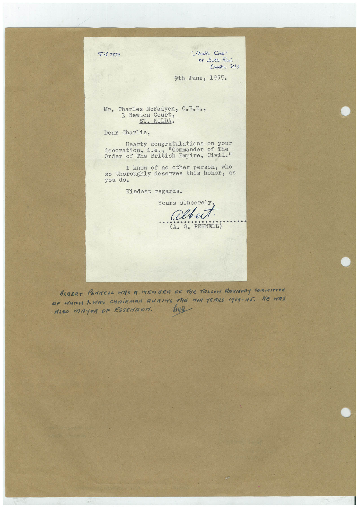

Book 1 · scan 121


Description
Transcription
Context
Review notes
Compare the machine draft with the scan. Handwriting and names need human review.
Artifacts
Edit the artifacts field in this note’s frontmatter to change these records. This summary is generated.
B01-S121-A01 — Letter — Book 1, scan 121
Types: Typed document, Letter
Scope: Whole scanned page; individual items can be split out during review.
Caption: Not mapped yet.
Caption source: Not recorded yet.
Caption status: unmapped
Machine transcription
FU 7834 "Nosilla Court" 35 Leslie Road, Essendon, 20.5 9th June, 1955. Mr. Charles MeFadyen, C.B.E., 3 Newton Court, ST. KILDA. Dear Charlie, Hearty congratulations on your "Commander of The dedor of the British Empire, Civil" I know of no other person, who so thoroughly deserves this honor, as you do. Kindest regards. Yours sincerely albut. PENNELL) ARBERT PENNELL WAS A MEMBER OF THE TARLOH ARTIGORY COmmITTER OF WHICH AWAS CHAIRMAN DURING THE MOR YEARS 1939-45. HE HAS ALSO MAYOR OF ESSENTOr. howa